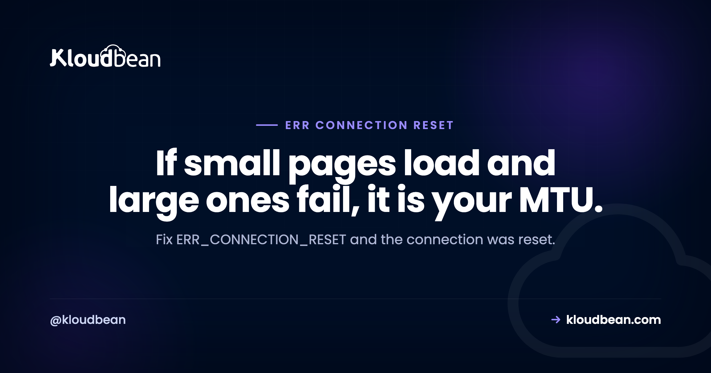

ERR_CONNECTION_RESET: Is It Your Computer or the Server?

"This site can't be reached. The connection was reset." Chrome reports it as ERR_CONNECTION_RESET, and the wording is more precise than it looks. A reset is not a refusal and not a timeout. The connection was established, data started moving, and then something sent a TCP reset and killed it mid-flight. Something interrupted a conversation that was already happening. Working out what did the interrupting is the job, and there are only three places it can live: your machine, the network path, or the server.
Test whether it happens on other sites and on a different network. If every site resets, the cause is local: a VPN, a proxy, antivirus TLS inspection, or a network adapter. If only one site resets and it does so from several networks, the cause is that server. If small pages load and large ones fail, you have an MTU problem in the path, which you can confirm with a ping using the do-not-fragment flag. Antivirus software that inspects HTTPS traffic is the single most common local cause.
Three minutes of triage, in this order
Do not change any settings yet. Answer three questions and you will know which third of this article to read.
| Test | If it fails too | If it works |
|---|---|---|
| Other websites | Local machine or your network | Specific to that site |
| Same site on mobile data | The server or its path | Your network or router |
| Same site in another browser | Not the browser | Browser profile or an extension |
Same site via curl | Genuinely a network or server issue | Something in the browser layer |
That fourth row is the most useful and the most skipped. curl bypasses the browser entirely, so a page that resets in Chrome and loads via curl points straight at browser configuration, an extension, or software intercepting TLS on your machine.
curl -v https://example.com 2>&1 | tail -20If every site resets: it is your machine
Antivirus or security software inspecting HTTPS. Start here, because it is the most common cause and the least suspected. Many security products intercept encrypted traffic to scan it, which means terminating your TLS connection and opening their own. When that interception mishandles a handshake, the connection dies with a reset. The tell is that it affects HTTPS sites broadly while plain HTTP works, and that it began after a security update rather than after anything you did.
Temporarily disable HTTPS or SSL scanning specifically, rather than the whole product, and retest. If that fixes it, you have found the culprit and can decide whether to exclude specific sites or leave the feature off.
VPN, proxy, or corporate network filtering. Any of these sit in the middle of your connections and can reset them. Disconnect and retest. On a managed corporate laptop, deep packet inspection may be resetting connections by policy, which is a conversation with IT rather than a setting you can change.
Browser extensions. Ad blockers, privacy tools, and anything that proxies requests. Test in a private window with extensions disabled, or a fresh browser profile.
The network stack itself. On Windows, resetting it is a legitimate step when everything else has been ruled out:
netsh winsock reset
netsh int ip reset
ipconfig /flushdns
:: then rebootOn macOS or Linux, renewing DHCP and flushing DNS is the equivalent, and driver-level problems are rarer.
Capture what Chrome actually saw. Underused and genuinely diagnostic. Visit chrome://net-export/, start a capture, reproduce the error, stop, then inspect the log. It records the exact point the connection died, which distinguishes a TLS failure from a transport reset without any guesswork.
If only large pages fail: it is MTU
This is the cause almost nothing explains properly, and it has a signature so specific that recognising it saves hours.
Every network path has a maximum packet size. If something in the path cannot carry a full-sized packet and cannot tell the sender to send smaller ones, large packets vanish and the connection stalls then resets. Small responses fit in one packet and arrive fine. Larger responses do not.
So the signature is: the site loads, small pages work, the login page works, and then one image-heavy page or one large API response resets every time. People conclude that specific page is broken. The page is fine. The packets carrying it are too big for the path.
Confirm it by finding the largest packet that gets through. The -M do flag forbids fragmentation, so the ping fails rather than silently splitting:
# Linux: 1472 bytes payload + 28 header = 1500, the standard MTU
ping -c 3 -M do -s 1472 example.com
# If that fails, step down
ping -c 3 -M do -s 1400 example.com
ping -c 3 -M do -s 1300 example.com
# macOS equivalent
ping -c 3 -D -s 1472 example.comIf 1472 fails and 1400 succeeds, the path cannot carry full-size packets. This turns up most often with VPNs and tunnels, which add their own headers and reduce the space available. The fix is to lower the MTU on the interface that carries the tunnel, or to clamp the maximum segment size so both ends negotiate a size that actually fits:
# Lower the interface MTU (test the value first)
sudo ip link set dev eth0 mtu 1400If you administer the server and some visitors report this while most are fine, MTU is worth investigating early. It produces exactly that split, because only some paths have the constraint.
If one site resets from everywhere: it is the server
Now you are debugging your own infrastructure. Work through these in order.
TLS negotiation failing. A reset during the handshake looks like a connection problem and is really a cryptography mismatch. Check what the server will actually agree to:
openssl s_client -connect example.com:443 -servername example.com </dev/null 2>&1 | grep -E "Protocol|Cipher|verify"
# Which versions does it accept?
for v in tls1_2 tls1_3; do printf "%-8s " "$v"; echo | openssl s_client -connect example.com:443 -servername example.com -$v 2>/dev/null | grep -q "Cipher is" && echo ok || echo "refused"; doneA server restricted to an unusually narrow cipher list will reset clients that share none of them. If someone hardened the TLS configuration recently and resets started, widen it back to a sensible modern set. Security configuration that drops legitimate visitors is not a security win.
The server killed the connection mid-response. A worker crashing, being recycled, or running out of memory produces a reset from the client's point of view. The logs name it:
sudo grep -iE "reset by peer|premature|closed connection" /var/log/nginx/error.log | tail -20
sudo grep -i "killed process" /var/log/syslog | tailIf you find the out-of-memory killer in there, the reset is a symptom and memory is the problem. That is the same underlying failure that shows up as a Cloudflare 520 when a proxy is in front.
Something is resetting deliberately. Intrusion prevention, DDoS mitigation, and some rate limiters drop connections rather than answering. Check whether your own protection is doing it, and remember the trap: behind a proxy, ban rules act on the proxy's address rather than on visitors, so your protection can end up resetting a share of your own traffic. Our error 521 guide covers restoring real client addresses, which needs to be in place before any of those rules mean what you think.
sudo fail2ban-client statusConnection limits under load. A server that has exhausted its accept queue resets new connections while looking alive:
ss -s
netstat -s | grep -iE "listen queue|overflow"Its close relatives
Chrome uses several similar messages and the distinction narrows things usefully.
| Message | What happened | Start with |
|---|---|---|
| ERR_CONNECTION_RESET | Established, then killed mid-flight | Local software, MTU, TLS, server crash |
| ERR_CONNECTION_REFUSED | Something answered and said no | Service stopped, firewall, wrong port |
| ERR_CONNECTION_TIMED_OUT | Nothing answered at all | Packets dropped silently, wrong address |
| ERR_EMPTY_RESPONSE | Connected, no data returned | Application crash, empty reply |
| ERR_CONNECTION_ABORTED | Ended early, often mid-transfer | Timeouts, unstable link |
| ERR_CONNECTION_CLOSED | Closed without a reset | Proxy or middlebox in the path |
The refused-versus-timed-out distinction is the same one that separates a Cloudflare 521 from a 522, and it is worth internalising because it applies at every layer. Refused means something is there and declining. Timed out means nothing is there, or the packets never arrive. For the refused case inside your own application code, ECONNREFUSED covers the same idea.
What visitors should be told
If you run the site and some visitors report this, the useful message is short: try a different network, and if you use a VPN or security software that scans HTTPS, disable that scanning temporarily. Those two cover most reports. Telling people to clear their cache is the standard advice and it does very little for a reset, because a reset happens at the transport layer before caching is relevant.
ERR_CONNECTION_RESET, hosted
Of the server-side causes, three are operational: TLS configuration that has drifted or been over-tightened, memory pressure killing workers mid-response, and protection rules acting on proxy addresses instead of visitors.
On Kloudbean, TLS configuration is maintained rather than left at whatever was current when the server was built, free SSL is issued and renewed, Shorewall and Fail2ban ship configured rather than as an exercise, and server metrics are visible so memory pressure is something you can see before it becomes a reset. Cloudflare is available as a paid add-on and included for enterprise accounts, which matters because the proxy and origin get configured together rather than bolted on afterwards.
The honest boundary: nothing a host does can fix antivirus software on a visitor's laptop, and MTU inside a corporate VPN is not ours to change. What managed infrastructure removes is the server half.

Downstream of this
For the refused and timed-out cases at other layers, ECONNREFUSED and Cloudflare error codes, including the 521 guide on restoring real visitor addresses and the 522 guide for the silent-drop side of the same distinction. If you have not identified your Chrome code yet, this site can't be reached maps them all to a layer. On TLS, fixing SSL certificate errors and SSL and TLS explained. When the server answers with nothing useful, error 520 and 502 Bad Gateway. And on the timeout side, 504 Gateway Timeout.
The server half, handled.
Managed servers with maintained TLS configuration, free SSL issued and renewed, Shorewall and Fail2ban configured, and visible memory and load metrics. Free migration assistance included. Start at kloudbean.com.
Maintained TLS · Free SSL · Firewall configured · Server metrics · One dashboard
FAQ
What does ERR_CONNECTION_RESET mean?
It means the connection was successfully established and then terminated abruptly by a TCP reset while data was moving. That distinguishes it from a refusal, where nothing accepted the connection, and from a timeout, where nothing answered. Something interrupted a conversation already in progress, and it can be your machine, something in the network path, or the server.
How do I know whether the problem is my computer or the website?
Try other websites, then try the same site on mobile data, then request it with curl. If everything resets, the cause is local. If only one site resets from several networks, it is that server. If curl succeeds where the browser fails, the problem is in your browser or in software intercepting TLS on your machine.
Can antivirus software cause ERR_CONNECTION_RESET?
Yes, and it is the most common local cause. Security products that scan HTTPS traffic terminate your encrypted connection and open their own, and when that interception mishandles a handshake the connection dies with a reset. Disable HTTPS or SSL scanning specifically, rather than the whole product, and retest.
Why do only some pages on a site reset?
That pattern usually means MTU. If something in the network path cannot carry full-sized packets, small responses arrive fine while larger ones vanish and the connection resets. Confirm it with ping -M do -s 1472 against the host: if that fails but 1400 succeeds, the path cannot handle full-size packets, which is common over VPNs and tunnels.
What is the difference between connection reset, refused, and timed out?
Reset means the connection was established and then killed mid-flight. Refused means something received the request and actively declined it, typically a stopped service or a firewall. Timed out means nothing answered at all, so packets are being dropped silently. Three different failures with three different investigations.
Does clearing my cache fix ERR_CONNECTION_RESET?
Rarely. A reset happens at the transport layer, before cached content is relevant, so clearing the cache addresses a different kind of problem. It is worth trying a private window to rule out extensions, but the higher-value checks are a different network, a VPN or proxy, and HTTPS scanning in security software.
Can my server cause connection resets?
Yes, in three main ways: a TLS configuration too narrow to agree with some clients, a worker crashing or being killed for memory mid-response, and protection software resetting connections deliberately. Check the web server error log for reset by peer and the system log for the out-of-memory killer, then check whether intrusion prevention is acting on proxy addresses rather than real visitors.
How can I see exactly where the connection failed?
In Chrome, open chrome://net-export/, start a capture, reproduce the error, then stop and inspect the log. It records the precise point at which the connection died, which separates a TLS handshake failure from a transport-level reset. That distinction saves a lot of guessing and very few guides mention the tool.